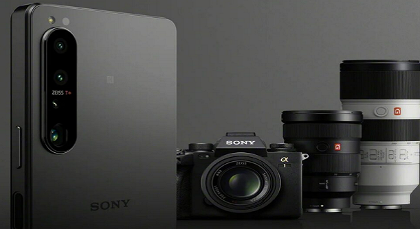

DigiNews
DigiNews
تمامی حقوق این سایت برای دیجی نیوز محفوظ است. نقل مطالب با ذکر منبع بلامانع است.
copy Right© 2022 DigiNews News Agancy, All rights reserved

سونی: کیفیت عکاسی با موبایل تا سال 2024 از دوربینهای DLSR هم بهتر میشود
«تروسی شیمیزو» رئیس و مدیرعامل Sony Semiconductor Solutions در جلسه توجیهی ادعا کرد که دوربین گوشیهای موبایل تا سال 2024 به اندازهای قدرتمند خواهند شد که میتوانند عکسهای بهتری نسبت به دوربینهای DSLR بگیرند. با ...
«تروسی شیمیزو» رئیس و مدیرعامل Sony Semiconductor Solutions در جلسه توجیهی ادعا کرد که دوربین گوشیهای موبایل تا سال 2024 به اندازهای قدرتمند خواهند شد که میتوانند عکسهای بهتری نسبت به دوربینهای DSLR بگیرند.
با توجه به اینکه گوشیهای هوشمند نسبت به دوربینهای DSLR همیشه از نظر فضا محدودیتهای بیشتری داشتهاند، ادعا شیمیزو کمی جسورانه به نظر میرسد. با این حال، فرض بر این است که اندازه سنسورهای دوربین موبایل افزایش پیدا خواهد کرد و تا سال 2024 ممکن است به نقطهای برسند که عملکرد آنها از سنسورهای دوربین DSLR بهتر شوند.
طبق گزارش اصلی که توسط Nikkei Japan منتشر شده، مدیر اجرایی سونی انتظار دارد تا کیفیت تصاویر ثابت گرفته شده توسط گوشیهای هوشمند در چند سال آینده و احتمالا در سال 2024، از کیفیت تصویر دوربینهای رفلکس تک لنز فراتر خواهد کرد.
عواملی که باعث پیشرفت دوربین موبایل میشوند
اما چه چیزی باعث برتری دوربینهای موبایل در مقابل دوربینهای DSLR طی چند سال آینده خواهد شد؟ سونی در این رابطه، به چند عامل مهم از جمله «اشباع کوانتومی» و بهبود «پردازش هوش مصنوعی» برای افزایش کیفیت دوربین گوشیهای موبایل اشاره میکند.
سونی در این جلسه همچنین به توسعه «فناوری پیکسل ترانزیستور دو لایه» خود نیز اشاره کرد که سال گذشته گزارشهایی درباره آن منتشر شده بود. گفته میشود که این فناوری باعث بهبود چشمگیر محدوده دینامیکی در موبایل میشود و همچنین به کاهش نویز تصاویر در نور کم کمک زیادی خواهد کرد.
درباره بازار دوربین موبایل، اخیرا گفته شده بود که سامسونگ در حال کار روی توسعه سنسور 200 مگاپیکسلی خود با نام ایزوسل HP3 است و همچنین شیائومی رسما از همکاری خود با شرکت سازنده دوربین لایکا خبر داده بود که طی آن یک گوشی پرچمدار با دوربین فوقالعاده معرفی خواهد شد. تمام این موارد نشان میدهد که شرکتهای تولیدکننده توجه بسیار زیادی به ارتقا و بهبود کیفیت و قابلیتهای دوربین گوشیهای خود دارند.
DigiNews
DigiNews
تمامی حقوق این سایت برای دیجی نیوز محفوظ است. نقل مطالب با ذکر منبع بلامانع است.
copy Right© 2022 DigiNews News Agancy, All rights reserved